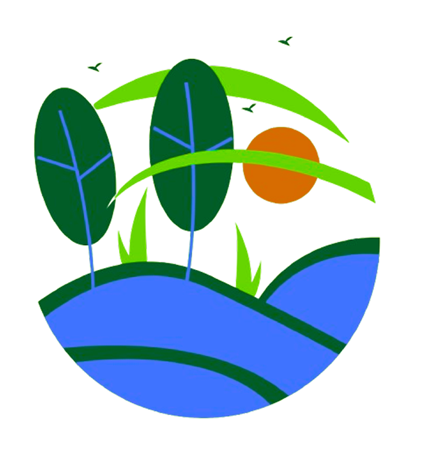
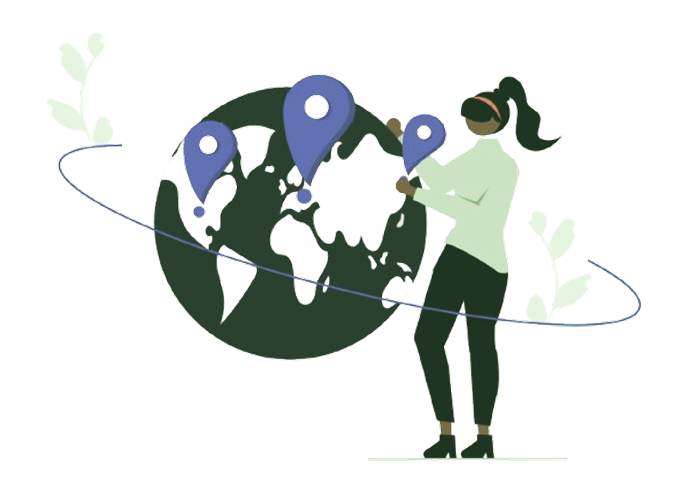

15
JUL
Workshop Pengelolaan Sampah
Pelajari cara efektif mengelola sampah rumah tangga dan mengurangi limbah plastik.
Selengkapnya

Kami berkomitmen untuk mengedukasi dan menginspirasi tindakan nyata dalam menjaga kelestarian lingkungan demi bumi yang lebih sehat. Melalui program, kampanye, dan aksi nyata, kami mengajak setiap individu untuk menjadi bagian dari perubahan positif.
Dengan semangat kolaborasi, kami percaya bahwa setiap langkah kecil yang kita ambil akan berdampak besar bagi bumi. Bersama-sama, mari kita wujudkan masa depan yang hijau, lestari, dan ramah lingkungan.
Jadilah bagian dari solusi! Berikut adalah beberapa langkah kecil yang dapat membuat dampak besar untuk bumi kita.

Bawa tas belanja sendiri, gunakan botol minum yang dapat digunakan ulang, dan hindari produk dengan kemasan berlebihan.

Matikan lampu saat tidak digunakan, gunakan lampu LED hemat energi, dan cabut charger saat tidak digunakan.

Ikut serta dalam program penghijauan di lingkungan sekitar untuk menyerap karbon dan menciptakan udara bersih.
Gunakan air seperlunya, perbaiki keran yang bocor, dan gunakan shower hemat air.
Pilih berjalan kaki, bersepeda, atau menggunakan transportasi umum untuk mengurangi polusi.
Kelola sampah organik di rumah dengan komposting untuk mengurangi limbah dan memperkaya tanah.
Pelajari cara efektif mengelola sampah rumah tangga dan mengurangi limbah plastik.
SelengkapnyaBergabung dalam aksi menanam ratusan pohon untuk hijaukan kembali lingkungan kita.
SelengkapnyaKampanye sadar lingkungan untuk mengurangi penggunaan plastik sekali pakai.
Selengkapnya